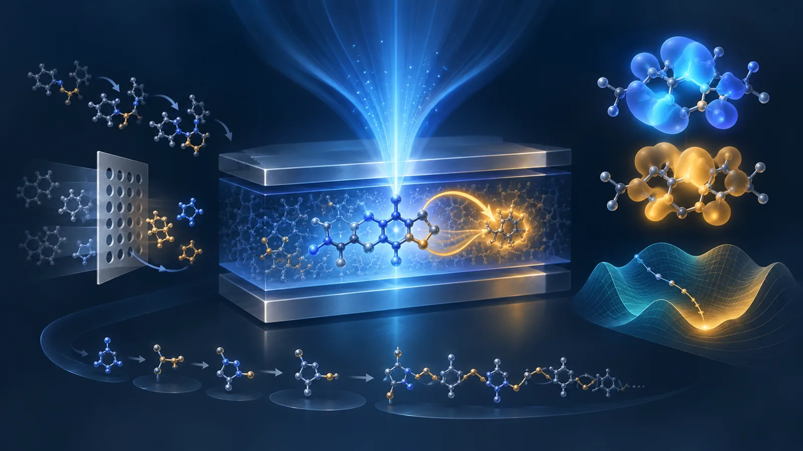
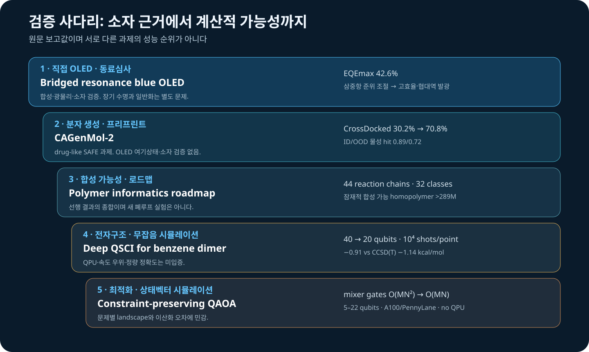

This week produced one directly relevant OLED paper. He, Zhang and Li report a bridged resonance configuration that modulates triplet excited states in blue organic light-emitting diodes and reaches a maximum external quantum efficiency (EQE) of 42.6%. Because the evidence extends through synthesis, photophysics and a device, rather than stopping at a generator or surrogate, it ranks first.
The other four records explain why that device result does not mean inverse design is solved. CAGenMol-2 uses one masked model for property prediction, conditional generation and local editing, but validates it on drug-like data. A polymer-informatics roadmap argues that synthetic routes should define the search space rather than remain an after-the-fact filter. Deep QSCI and QAOA address weak π–π interactions and constrained optimization, respectively, but both use noiseless classical simulation rather than a physical quantum processor. The unit of OLED inverse design is therefore not “a generated molecule,” but a validation chain spanning excited states, synthesis, aggregation, devices and computational resources.

Figure 1. Conceptual illustration generated for this review. The molecular motifs, orbitals and landscape are not exact structures, measured morphologies, quantitative plots or executable quantum circuits.
The layout-checked weekly technical brief is available as a PDF.
Ranked reading list
- Bridged resonance configuration enables high-efficiency and narrow-emission in blue organic light-emitting diodes — direct synthesis, photophysics and device evidence; EQEmax 42.6%.
- One Sequence, Many Decodings: CAGenMol-2 Recasts Drug Design as Masked Molecular Inference — one SAFE-based masked model for prediction, generation and local optimization.
- A roadmap for polymer informatics super-intelligence — connects generation, prediction and synthesis planning, including prior work with 44 reaction chains and 32 polymer classes.
- A Divide-and-Conquer Quantum-Selected Configuration Interaction for Evaluating π–π Stacking Interaction Energies in the Benzene Dimer — 40→20 qubits through monomer reuse, in simulation.
- Quantum Approximate Optimisation Algorithm for Protein Sidechain Packing — W-state plus XY ring mixer preserves one-hot constraints, in A100 state-vector simulation.

Figure 2. Reviewer-constructed evidence map using source-reported values. It is not a ranking across unlike tasks; neither quantum study ran on a physical QPU.
1. A blue OLED that makes the triplet manifold a design target
Bridged resonance configuration enables high-efficiency and narrow-emission in blue organic light-emitting diodes
Yi-Hui He, Zhen Zhang, Yan-Qing Li. Nature Communications, 29 September 2026. DOI: 10.1038/s41467-026-78234-0
Blue-OLED efficiency and linewidth cannot be optimized by considering singlet emission alone. Where electrically generated triplets reside, and how they return to an emissive singlet, affects accumulation, roll-off and degradation risk. The paper proposes a bridged resonance configuration to modulate triplet states while retaining high photoluminescence quantum yield and narrow blue emission, and reports maximum EQE of 42.6%.
Evidence boundary. This is the issue’s only peer-reviewed, directly device-relevant paper. The open Nature Communications index and DOI metadata confirm the date, three authors and 42.6% EQE. The publisher redirected the full text through authentication in this environment, so detailed values for ΔE_ST, k_RISC, linewidth or lifetime were not extracted or inferred.
Workflow translation — reviewer proposal. Represent bridged resonance with S_1/T_n ordering, spin–orbit or vibronic-coupling proxies, transition-density localization and conformer sensitivity. Screen with a fixed TDDFT/TDA protocol, reserve state-specific benchmarks for a shortlist, and test triplet accumulation in host-polarized films and devices. The 42.6% value belongs to the reported material and stack, not to a generic inverse-design hit rate.
2. One masked model can support several tasks, but not replace OLED validation
One Sequence, Many Decodings: CAGenMol-2 Recasts Drug Design as Masked Molecular Inference
Yanting Li, Enyan Dai, Lei Wang, Wen-Cai Ye, Li Liu. arXiv:2609.34301v1, 28 September 2026. Preprint
CAGenMol-2 combines a molecular SAFE sequence, continuous scalar slots for logP, molecular weight, QED, synthetic accessibility and molar refractivity, and optional 3D pocket tokens. The same checkpoint changes tasks by changing observed and masked regions. AdaFO adds gradient-free mask-and-refill local search.
Source-reported results. Mean single-property hit rates were 0.89 ID and 0.72 OOD. Joint hit rates were 0.76 for a three-property Lipinski-like target and 0.84 for a lead-like pair. On 5,000 held-out molecules, the scalar head reached macro R² 0.910 and Pearson 0.974. Selecting the most confident 25% reduced MAE by 29.1–59.9%. Across 100 CrossDocked pockets, AdaFO raised success from 30.2% to 70.8%, with mean Vina −8.76 kcal/mol and 85.1% high-affinity fraction.
Limitations and translation. These are drug-like and pocket tasks; confidence is not a calibrated posterior. SAFE validity, SA score and docking do not establish synthesis, excited-state accuracy or OLED performance. OLED records should bind each property to method and environment, while shortlisted mask-and-refill candidates undergo independent TDDFT and reaction-aware filtering.
3. Synthesizability should define the space, not merely score its output
A roadmap for polymer informatics super-intelligence
Akhlak Mahmood, Janhavi Nistane, Huan Tran, Chiho Kim, Rampi Ramprasad. arXiv:2609.34051v1, 28 September 2026. Preprint
This is a roadmap rather than a new benchmark. It connects representations, data extraction, property models, generative design, retrosynthesis and agents. It summarizes prior RxnChainer work that applied 44 reaction chains over 32 polymer classes to enumerate more than 289 million potentially makeable homopolymers. It also describes polyT5 training at more than 100 million polymers and a polyBART example with predicted Tg 595 K versus experimental 513 K.
Evidence boundary and translation. These values belong to cited prior studies, not a new autonomous-lab demonstration. “Super-intelligence” is an aspiration extending to closed-loop experimentation. For OLED emitters and hosts, validated coupling, borylation or SNAr templates and building-block inventories are more informative than one SA score. Route length, rare reagents and yield uncertainty should be stored before excited-state ranking. Polymer statistics are not small-molecule OLED synthesis yields.
4. Deep QSCI halves the register, but accuracy and advantage remain open
A Divide-and-Conquer Quantum-Selected Configuration Interaction for Evaluating π–π Stacking Interaction Energies in the Benzene Dimer
Ryotaro Tajima, Rei Sato, Yosuke Iyama, Ryo Kiguchi, Yoshitake Kitanishi. arXiv:2609.36708v1, 29 September 2026. Preprint
Deep QSCI samples determinants from one monomer, builds local bases with particle-number-conserving excitations, and classically diagonalizes a dimer effective Hamiltonian. The monomer result is reused for both fragments and all separations.
Results and execution boundary. Direct CAS(28e,20o) requires 40 qubits; the CAS(14e,10o) monomer requires 20. UCCSD inputs were evaluated with Classiq SDK 1.25.0 by noiseless simulation, using 10⁴ shots per point and 5×10⁴ for the scan. With 6-31G**, Deep QSCI gives −0.908 kcal/mol at 4.0 Å versus counterpoise-corrected CCSD(T) −1.139 kcal/mol; effective dimension is 8,649.
Limitations and translation. Different Hamiltonians, orbitals and counterpoise treatments preclude quantitative validation. cc-pVDZ exposes large cancellation and missing charge transfer. There is no QPU, runtime benchmark or quantum advantage. OLED studies should treat this as a small host–guest active-space benchmark beside SAPT, DLPNO-CCSD(T) or dispersion-corrected DFT.
5. Constraint-preserving QAOA is an encoding idea, not hardware evidence
Quantum Approximate Optimisation Algorithm for Protein Sidechain Packing
Sebastian O. M. Stewart, Nick Chancellor, Jonte R Hance, Ittoop Vergheese Puthoor. arXiv:2609.31077v1, 25 September 2026. Preprint
The study maps one-rotamer-per-residue packing to a one-/two-body QUBO. W-state initialization and a cyclic XY mixer preserve Hamming weight one. The authors reduce two-qubit-gate scaling from O(MN²) to O(MN) and mixer depth from O(N) to 2.
Execution and results. PennyLane 0.44.1, Lightning 0.44.0 and JAX 0.7.2 simulated 5–22 qubits, p≤12 and 30 seeds on an A100 GPU. The fitted 99.99%-recovery budget stayed below 500 through 22 qubits, but actual 22-qubit subsections ranged about 52.5–732.9 shots. In 1,500 moderate-confidence 5–14-qubit runs, 54% beat the AlphaFold PyRosetta baseline; mean winning improvement was −8.114 kcal/mol.
Limitations and translation. StatePrep hides hardware-native W-state cost. The gain reflects a weaker baseline, not stronger quantum power. No QPU, routing/noise/latency or strong classical-heuristic comparison is supplied. OLED one-hot selection can borrow the mixer idea only after comparison with simulated annealing, tabu search and CP-SAT.
Practical experiment for the coming week
Build a reaction-aware audit set around bridged-resonance chemistry. Start from 20 public MR-TADF scaffolds and enumerate ten bridge or adjacent-substituent variants per scaffold using real reaction templates. Under one geometry protocol, calculate S_1, T_1, nearby T_n states, oscillator strength and transition-density localization; add an SOC or spin-vibronic proxy only for the top 20. Use scaffold-disjoint splits and record generative confidence beside an independent TDDFT hit rate.
Read first
Start with He and co-workers’ bridged-resonance blue-OLED paper. It is the only record this week spanning synthesis, photophysics and a device, and makes the triplet manifold a primary design target.
Coverage gaps
No new PhOLED host, host–dopant/exciplex, OLED-degradation, GW–BSE, SELFIES, CRBM/Boltzmann-machine, or D-Wave/quantum-annealing work met the window. CAGenMol-2 uses SAFE, not SELFIES. Deep QSCI and QAOA are classical-simulator results with no physical QPU, noise-aware resource estimate or quantum advantage. No new OLED-scale VQE result was found.
Evidence and disclosure
The window covers records first published 25 September–1 October 2026. Items from the previous eight issues were excluded. Values are source-reported; no calculation, synthesis or device experiment was independently reproduced. OLED translations and the proposed experiment are reviewer proposals. The hero is conceptual and exact evidence is separated into a deterministic SVG. scientific-stop-slop-ko publication copyediting was applied.
References
- Y.-H. He, Z. Zhang, Y.-Q. Li, Nature Communications (29 Sep 2026). https://doi.org/10.1038/s41467-026-78234-0
- Y. Li et al., arXiv:2609.34301v1 (28 Sep 2026). https://arxiv.org/abs/2609.34301
- A. Mahmood et al., arXiv:2609.34051v1 (28 Sep 2026). https://arxiv.org/abs/2609.34051
- R. Tajima et al., arXiv:2609.36708v1 (29 Sep 2026). https://arxiv.org/abs/2609.36708
- S. O. M. Stewart et al., arXiv:2609.31077v1 (25 Sep 2026). https://arxiv.org/abs/2609.31077